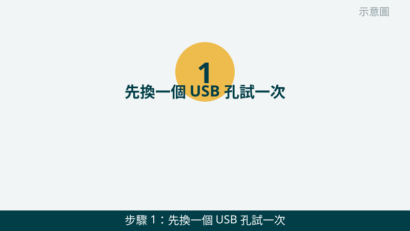
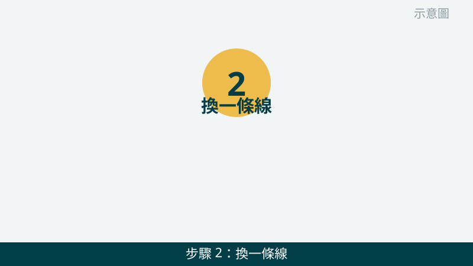
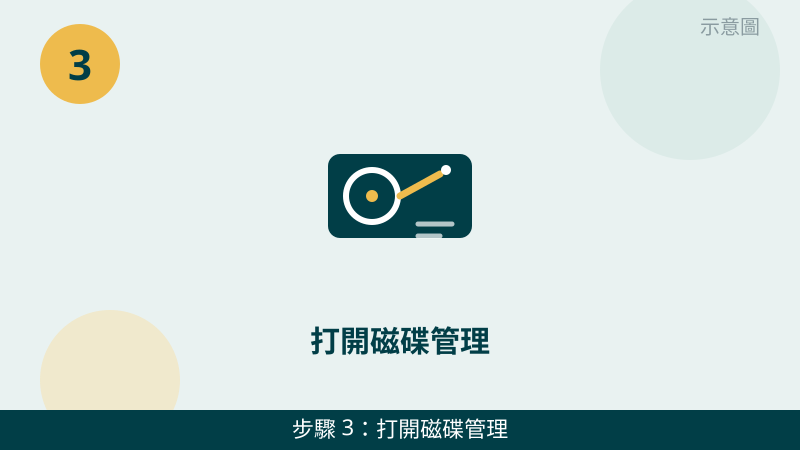
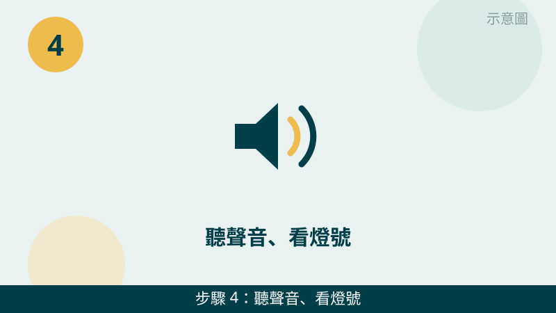
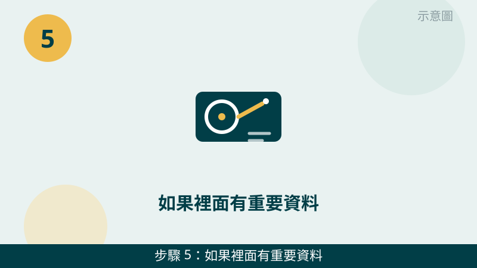
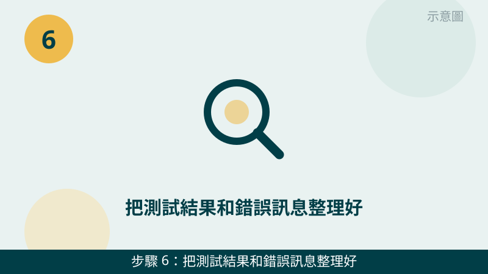

隨身碟插上去沒反應、外接硬碟轉了卻看不到，確實會讓人很緊張，尤其裡面有重要資料的時候。但請先放心：讀不到的原因很多，不一定是裝置壞了，也可能是孔、線或系統設定在作怪。先照順序縮小範圍，比亂試一通安全得多。
開始之前先跟您說明一個判斷原則：「一次只換一個變因」。同時換孔又換線，試出來也不知道是哪一個環節的問題。每一小步試完，先記下有沒有反應，再換下一個，檢查才有意義。
讀不到的畫面先傳給我們看
把磁碟管理的畫面、裝置的燈號和錯誤訊息拍下來傳 LINE，抓不抓得到、是哪個環節出問題，通常一看就有方向。先免費評估、報價透明，確認後再預約維修。
隨身碟讀不到、硬碟抓不到自救檢查清單（由簡到難）
- 1. 先換一個 USB 孔試一次，不要反覆插拔。請把裝置從原本的孔拔下，換到電腦上另一個孔（最好是主機後方直接接主機板的孔）再插一次，插好後等十幾秒，看檔案總管有沒有出現。怎麼判斷：換孔就出現，代表原本的孔可能接觸不良或供電不足；換孔還是沒反應，再往下查。請不要一直拔插試運氣，反覆插拔對接頭和裝置都不好。

示意圖（非官方截圖） - 2. 換一條線、換一台電腦交叉測試。如果您手邊有另一條同規格的傳輸線，請先換線再試；有另一台電腦的話，也請把裝置拿到另一台電腦上試一次。怎麼判斷：換線就好了，是線的問題；換電腦就讀得到，是原本那台電腦的孔或系統問題；兩台都讀不到，問題比較可能在裝置本身。

示意圖（非官方截圖） - 3. 打開磁碟管理，看系統抓不抓得到。在工作列的開始按鈕上按右鍵，點「磁碟管理」，看清單裡有沒有這顆裝置。怎麼判斷：清單裡完全沒有，代表系統根本沒抓到裝置；清單裡有、但檔案總管看不到，可能是磁碟機代號或分割區的問題，這一步請只看、不要亂按裡面的格式化或初始化，拿不準就先拍照問我們。

示意圖（非官方截圖） - 4. 聽聲音、看燈號，感覺硬碟有沒有在運轉。外接硬碟插上後，請留意燈號有沒有亮、裡面有沒有輕微轉動的感覺或聲音。怎麼判斷：燈完全不亮、完全沒動靜，可能是供電或線材問題；如果聽到規律的喀喀聲、刮擦聲，請立刻停止測試、不要再插拔，拍照問我們就好，繼續試可能讓狀況更糟。

示意圖（非官方截圖） - 5. 如果裡面有重要資料，千萬不要自己格式化。系統跳出「需要格式化才能使用」時，請不要按格式化，格式化會讓原本的資料更難處理。也不要隨便下載來路不明的救援軟體來跑，跑錯地方反而可能覆蓋資料。怎麼判斷：資料重不重要，就是這一步的分水嶺——資料不重要，可以先拍照問我們再決定；資料很重要，請直接停在這一步。

示意圖（非官方截圖） - 6. 把測試結果和錯誤訊息整理好，拍照傳給我們。請把您試過的孔、線、電腦結果，連同磁碟管理畫面和任何錯誤訊息的照片，一起傳 LINE 給我們。怎麼判斷：資訊越完整，我們越能先幫您分清是裝置、孔、線還是系統問題，也能先說明接下來檢測的方向，評估不收費。

示意圖（非官方截圖）
別再自己試了
- 硬碟傳出喀喀聲、刮擦聲，或插上後異常發燙——請立刻停手，不要再反覆插拔測試
- 裝置摔到、進水、泡水後讀不到，裡面又有重要資料
- 系統一直跳出格式化提示，裡面資料很重要時，不要按格式化
- 想自己拆外接硬碟外殼或拆開硬碟本體但不確定怎麼拆——請先拍照問我們，不要硬拆
- 來路不明的救援軟體宣稱一鍵保證救回，不要隨便下載安裝
常見問題
換孔、換線、換電腦都沒用，是不是裝置就壞了？
不一定。交叉測試都沒反應，雖然裝置本身出問題的可能性變高了，但也可能是系統驅動、磁碟分割表或供電問題。建議您把交叉測試的結果和磁碟管理的畫面拍下來傳給我們，我們會再幫您判斷下一步，評估不收費。
磁碟管理看得到，但檔案總管看不到，該怎麼辦？
這種情況通常是磁碟機代號不見了，或分割區出了狀況，不代表資料一定不見了。請您先不要格式化、也不要隨便按磁碟管理裡的初始化或刪除磁碟區，先把磁碟管理的畫面拍照傳給我們確認，比較安全。
隨身碟或硬碟抓不到，裡面的資料還救得回來嗎？
要看原因和之後有沒有再寫入。單純是孔、線或系統設定問題，資料通常還在；如果是硬碟本身有異音、摔到或進水，處理方式就完全不同，而且不建議再反覆插拔測試。我們不會事先給您成功率承諾，檢測後會先說明狀況和報價，再由您決定要不要處理。
相關文章：檔案誤刪、資料救援前該做的事、自救百科總覽